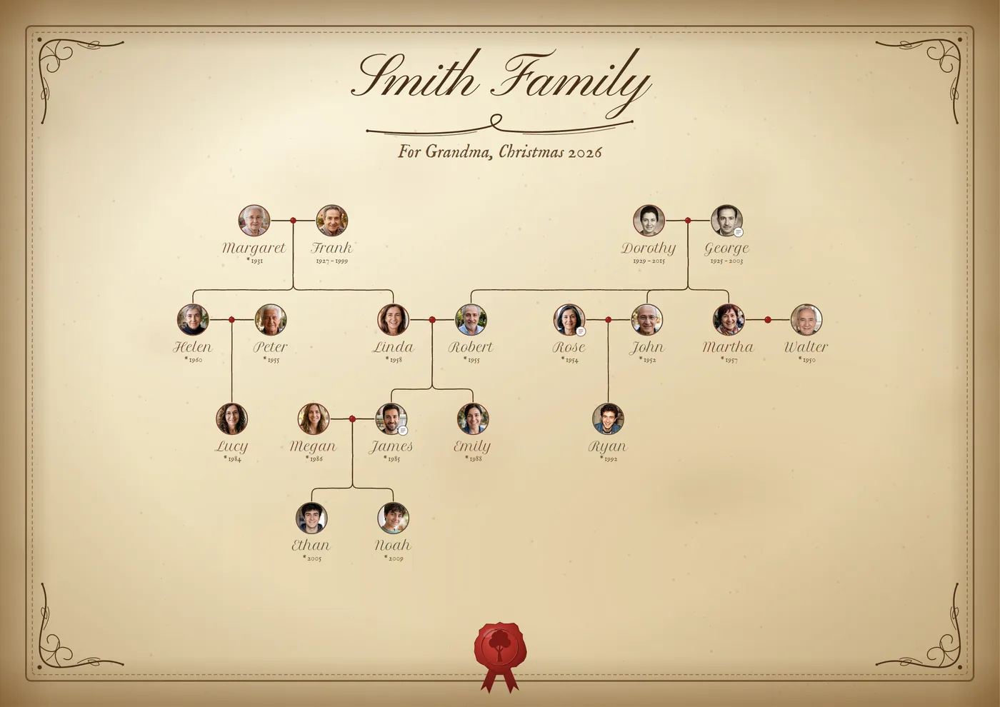
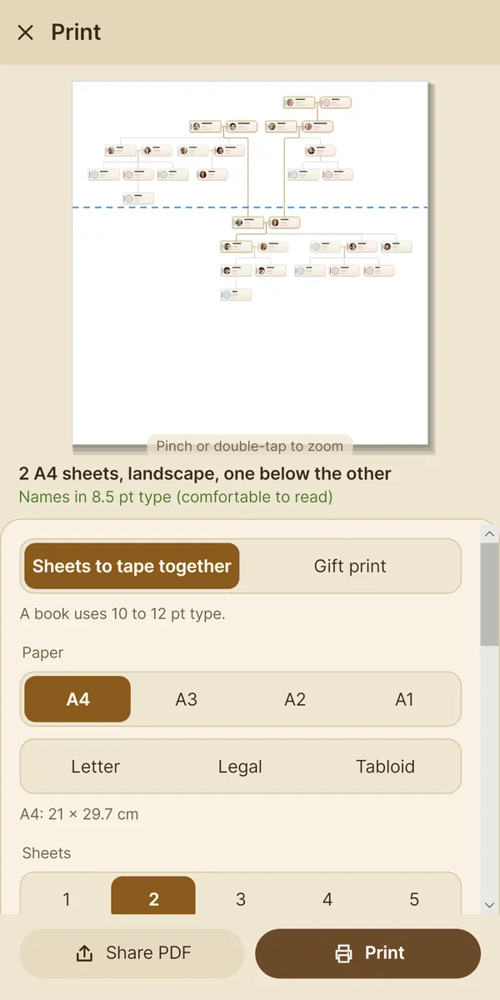

How to print your family tree as a large poster
A family tree really shines in a big frame, in the living room or at the grandparents' house. This guide explains how to choose the size, make every name readable and get it printed without surprises.

1. Choose the size
The easiest way is to print the tree at the size of a ready-made frame, so you don't need a custom one. The most common are 11×14, 16×20 and 18×24 in (30×40, 40×50 and 50×70 cm in Europe). Ramo has all of them, plus Letter, Tabloid, A4 and A3.
| Size | Good for | How many people, roughly |
|---|---|---|
| Letter or A4 | Your home printer | Up to about 35 |
| 11×14 in or 30×40 cm | A shelf or a desk | Up to about 50 |
| 16×20 in or 40×50 cm | A frame on the wall | Up to about 60 |
| 18×24 in or 50×70 cm | The big frame in the living room | Up to about 80–90 |
These numbers assume cards with photos and names of about 9 points, and they depend a lot on the shape of the tree. You don't have to work it out: Ramo shows you the exact font size before you print.
2. Set up the print in Ramo
- Open the tree, tap the menu and choose Print.
- At the top, choose Gift print and, under paper, 18×24 in (or your frame's size).
- Under Tree layout you'll see, below each option, how big the names will come out. The star ★ marks the one that makes them biggest.
- Type the title (“Smith Family”) and, if you like, a dedication (“For Grandma, Christmas 2026”).
- Pick a style: Parchment, Paper and ink, Garden, Album… Each one has its own frame, colors and font.


3. Make every name readable
As a rule of thumb: 8 points can be read up close, 10 to 12 are comfortable with the frame in your hands or on a table, and for reading it on the wall it's best to go above 14. If the names come out small, in Ramo you can:
- Try another layout: the left-to-right ones often help a lot with very wide families.
- Remove what you don't need from the cards (the photo, the years or the surnames). Ramo shows how much each one gains.
- Use Cards closer together or a narrow space next to the frame.
- Go up a size, or make one print per branch (the father's side and the mother's side).
Open the preview full screen and pinch to zoom: what you see is what you'll get.
4. Save the PDF and take it to be printed
Tap Share PDF and email it to yourself or save it to a USB stick. Ramo's PDF is vector-based: names and lines stay sharp at any size.
At the print shop, or with an online poster printing service, ask for:
- Printing at actual size (100%), not “fit to page”.
- Matte photo paper or matte coated paper (around 170–250 gsm / 80–100 lb): no glare behind the glass.
- Trimming to the frame size, if the sheet is bigger.
What if I want to print it at home?
Choose Sheets to tape together: Ramo spreads the tree over several Letter or A4 sheets with marks to cut and join them, and shows you first how many sheets you need and how big the names will be. It's in the free version too.
Gift prints are part of Ramo Complete (a single payment). With the free version you can print the tree on sheets, with a small “Made with Ramo” mark.
More guides